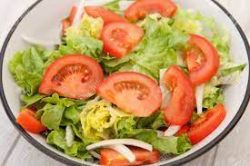

<!DOCTYPE html>
<html lang="en">

<head>
    <meta charset="UTF-8">
    <meta http-equiv="X-UA-Compatible" content="IE=edge">
    <meta name="viewport" content="width=device-width, initial-scale=1.0">
    <title>Document</title>
</head>
<style>
    body {
        background-color: rgb(205, 108, 181);
    }
</style>

<body>
    <!-- <p>LISTA "NO ORDENADA"</p>
    <ul>Comprar Verduras
        <li>Lechuga</li>
        <li>Tomate</li>
        <li>Cebolla</li>
    </ul>
    <p>LISTA "ORDENADA"</p>
    <OL>Hacer Ensalada
        <Li>Lavar lechuga</Li>
        <li>Cortar lechuga y poner en ensaladera</li>
        <li>Lavar tomates, cortar y agregar</li>
        <li>Pelar, lavar, cortar cebolla y agregar</li>
        <li>Condimentar con sal, aceite y vinagre a gusto</li>
        <li>
            
        </li>
        <li>
            
        </li>
    </OL>
    <p>LISTA "ORDENADA INVERTIDA"</p>
    <ol reversed>
        Mis 5 comidas favoritas de menos a más
        <li>Ravioles</li>
        <li>Pizza</li>
        <li>Milsnesas</li>
        <li>Sushi</li>
        <li>Asado</li>
    </ol>
    <p>AGREGAR ÍTEMS A LA LISTA INVERTIDA</p>
    <ol reversed start=7>
        Sumo 2 comidas más en orden
        <li>Puchero</li>
        <li>Estofado</li>
    </ol> -->
<script src="Alternativa.js"></script>
</body>

</html>